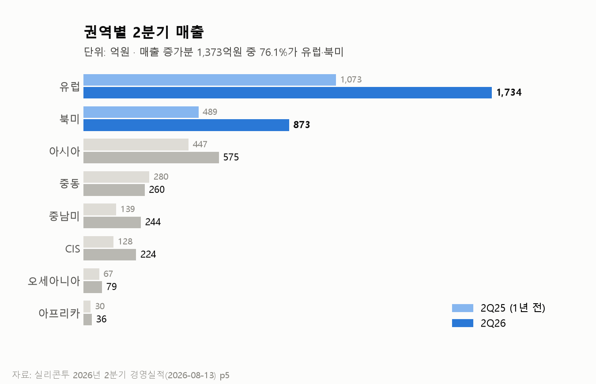
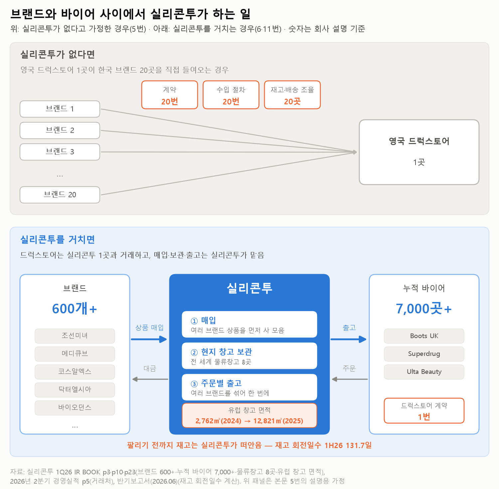
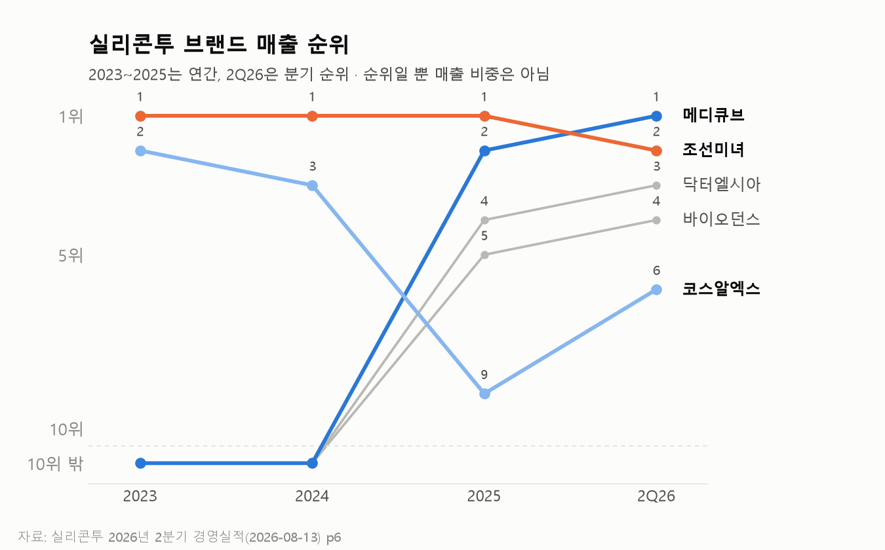
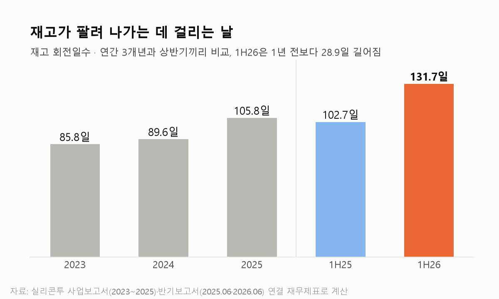
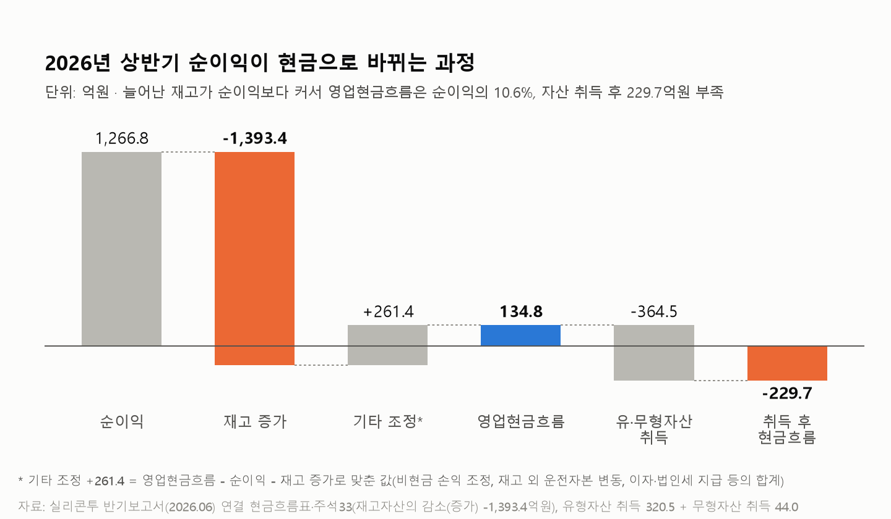
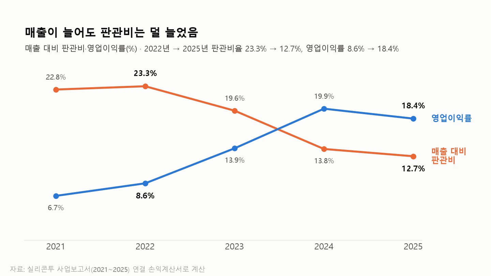
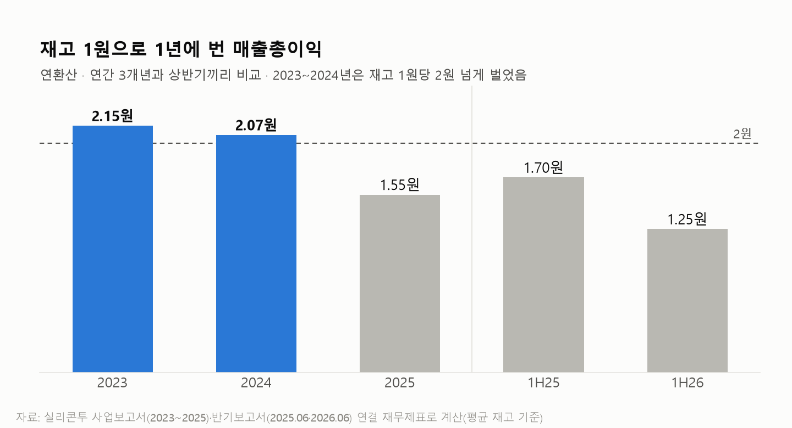

K-뷰티 브랜드는 왜 실리콘투를 거쳐서 유럽으로 갈까?
실리콘투 반기보고서와 2분기 실적 자료를 보다가, 남의 브랜드를 사다 파는 회사가 어떻게 K-뷰티 수출의 한가운데에 있는지 궁금해져서 정리해 봅니다.
1사업 이야기
5~12번은 화장품 수출 도매가 돈을 버는 방식을 설명하는 내용이라, 아는 내용이면 스킵하면 됩니다.
1. 실리콘투의 2026년 2분기 유럽 매출은 1,734억원임. 1년 전 같은 분기에는 1,073억원이었으니 61.6% 늘었고, 같은 기간 북미 매출은 489억원에서 873억원으로 78.3% 늘었음.

2. 2분기 전체 매출 증가분 1,373억원 중 76.1%가 이 두 지역에서 나왔음. 회사는 유럽의 Boots UK·Superdrug, 북미의 Ulta Beauty 같은 현지 소매 유통사와의 거래 확대를 이유로 설명함.
3. 실리콘투는 한국 화장품을 사서 해외 유통사와 소비자에게 파는 회사임. 2021년 코스닥에 상장했고, 2025년 매출은 1조 1,163억원이었음. 2026년 상반기 매출의 94.3%는 소비자가 아니라 해외 기업 고객과의 거래에서 나왔음.
4. 여기서 질문이 하나 생김. 조선미녀나 메디큐브가 유럽에서 잘 팔린다면, 브랜드가 직접 팔면 되지 왜 실리콘투를 거칠까?
5. 영국 드럭스토어 체인이 한국 브랜드 20개를 매대에 올린다고 가정해 봄. 브랜드마다 따로 계약하고, 수입 절차를 20번 밟고, 재고와 배송도 20곳과 따로 맞춰야 함.
6. 실리콘투는 이 일을 한데 모아서 해 줌. 여러 브랜드의 상품을 사 모은 뒤 현지 창고에 보관했다가, 거래처 주문에 맞춰 출고함. 회사 IR 자료 기준으로 600개 넘는 브랜드를 다루고, 누적 바이어는 7,000곳이 넘음.
7. 동네 식당과 주류 도매상을 떠올리면 쉬움.
8. 식당은 술을 양조장마다 따로 주문하지 않고 도매상 한 곳에서 받음. 도매상은 여러 양조장 술을 미리 사서 창고에 쌓아 두고, 식당이 전화하면 트럭 한 대에 섞어 실어 보냄.
9. 도매상이 돈을 버는 방식은 단순함. 거래하는 식당이 늘어도 창고와 트럭은 그대로 쓰니, 매출이 늘수록 매출 대비 비용이 낮아짐.
10. 대신 도매상은 식당이 주문하기 전에 술을 먼저 사서 쌓아 둬야 함. 팔리기 전까지 그 돈은 창고에 묶여 있음.
11. 실리콘투의 창고가 이 도매상 창고임. 회사는 전 세계 8개 물류창고를 운영한다고 설명하고, 유럽 창고 면적은 2024년 2,762㎡에서 2025년 12,821㎡로 4배 넘게 늘었음.

12. 다만 술 도매와 다른 점이 하나 있음. 소주 브랜드는 몇 년이 지나도 잘 안 바뀌지만, 해외에서 팔리는 한국 화장품은 1~2년 만에 순위가 뒤집힘.
13. 실리콘투 매출 1위 브랜드는 2023~2025년 조선미녀였는데, 2026년 2분기에는 메디큐브가 1위로 올라섰음. 메디큐브는 2024년까지 10위 안에도 없던 브랜드임.
14. 코스알엑스는 2023년 2위에서 2025년 9위까지 내려갔음. 반대로 닥터엘시아와 바이오던스는 2024년까지 10위 밖이었다가 2025년 4위·5위로 올라왔음.

15. 1위가 바뀌고 한때 2위였던 브랜드가 9위로 밀리는 동안에도, 매출은 2023년 3,429억원에서 2025년 1조 1,163억원으로 3배 넘게 늘었음. 새로 뜨는 브랜드를 빨리 잡아서 파는 능력이 있었다는 근거로 볼 수 있음.
16. 브랜드 쪽에서 보면 이게 실리콘투를 거치는 이유로 보임. 신생 브랜드가 유럽 창고와 거래처를 직접 만들기 전에, 이미 창고와 바이어를 가진 곳에 올라타면 바로 수출이 되기 때문임.
17. 거래처 쪽도 한 곳에 몰려 있지 않음. 매출 상위 3개 기업 고객의 비중은 2024년 18.19%에서 2026년 상반기 8.94%로 낮아졌음. 다만 매년 상위 고객을 새로 뽑는 숫자라, 기존 고객이 떠나지 않았다는 뜻은 아님.
18. 회사는 코스알엑스와 협업을 다시 시작한 뒤 실적이 반등했다며 이를 유통 역량의 사례로 설명함. 순위도 2025년 9위에서 2026년 2분기 6위로 올라왔지만, 거래가 왜 멈췄다가 다시 시작됐는지는 공개 자료로 확인되지 않음.
19. 여기까지 보면 "K-뷰티가 뜨는 한 실리콘투는 앉아서 돈을 버는구나" 하고 읽힘. 틀린 말은 아니지만, 이 숫자에는 조심해서 볼 부분이 섞여 있음.
20. 앞에서 본 도매상의 약점, 먼저 사서 쌓아 둬야 한다는 부분이 커지고 있음.
21. 재고가 팔려 나가는 데 걸리는 날(재고 회전일수)은 2023년 85.8일, 2025년 105.8일이었고, 2026년 상반기에는 131.7일까지 길어졌음. 1년 전 상반기 102.7일보다 28.9일 늘어난 것임.

22. 131.7일이면 창고에 들어온 화장품이 팔려 나가기까지 평균 넉 달 넘게 걸린다는 뜻임. 같은 재고 1원으로 1년에 벌어들이는 매출총이익도 2025년 1.55원에서 2026년 상반기 1.25원으로 낮아졌음.
23. 그래서 이익과 현금이 따로 움직임. 2026년 상반기 순이익은 1,266.8억원이었는데, 영업활동으로 실제 들어온 현금은 134.8억원으로 순이익의 10.6%였음.
24. 차이의 대부분은 재고임. 상반기에 늘어난 재고가 1,393.4억원으로 순이익보다 많았고, 유·무형자산 취득에 쓴 364.5억원까지 빼면 229.7억원이 모자랐음.

25. 회사는 공급을 안정시키려고 미리 물량을 보내고 물류를 넓힌 결과라고 설명함. 재고가 얼마나 오래됐는지, 품절이 얼마나 나는지는 공시되지 않아서, 어디까지가 성장 준비 물량이고 어디부터가 안 팔린 재고인지는 나눌 수 없음.
26. 한 가지 더 있음. 유통사에 납품한 금액은 소비자가 매장에서 산 금액과 다름. 새 매장 매대를 처음 채우는 물량도 실리콘투 매출로 잡히는데, 거래처별 재발주나 같은 매장 판매량은 공개되지 않음.
27. 8월 18일 실리콘투는 CVC캐피탈 측에 주당 45,000원, 약 3,000억원어치 상환전환주를 발행하기로 결정했고, 납입 예정일은 9월 15일임. CVC는 해외 확대와 공급망 개선을 지원한다고 발표했음.
28. 정리하면 브랜드가 실리콘투를 거치는 건 실리콘투가 창고·재고·거래처를 대신 떠안기 때문인 것 같음. 그 떠안는 재고가 지금 빠르게 불어나는 중이고, 새로 들어올 3,000억원도 투자 목적으로 보면 창고와 재고 쪽으로 쓰일 가능성이 높아 보임.
2기대수익률
29. 여기까지가 사업 이야기임. 이제 지금 가격에 사면 수익률이 얼마나 될지 계산해 봄.
30. 증권사 리포트는 보통 내년 이익에 PER 몇 배를 곱해서 목표주가를 냄. 여기서는 버크셔 해서웨이가 장기 복리를 볼 때 중요하게 다룬 두 숫자, 장부가 대비 가격(PBR)과 자기자본이익률(ROE)로 계산해 봄.
31. 계산은 단순함. 실리콘투의 ROE가 앞으로 N년간 유지된다고 가정했을 때, 1년에 몇 %가 남는지를 봄.
32. 실리콘투는 9월 16일 종가 42,750원 기준으로, 9월 15일 들어올 상환전환주 3,000억원이 전액 자본으로 분류된다고 가정하면 장부가(주당 13,712원)의 3.12배임.
33. 증권사 6곳의 평균 이익으로 그린 2027~2028년 ROE는 평균 23.9%임. 이익을 가장 낮게 본 곳 기준으로는 22.0%, 가장 높게 본 곳 기준으로는 25.1%임. 모두 2025년 46.9%의 절반 수준인데, 이익이 줄어서가 아니라 3,000억원 증자와 쌓이는 이익으로 자본이 빠르게 커지기 때문임.
34. 핵심변수는 사업이 어느 쪽으로 가느냐에 따라 ROE가 어느 수준에서 몇 년 이어지느냐임. 그래서 세 경우로 나눠 봄.
35. Base는 늘린 재고가 지금처럼 느리게 돌아서, 창고와 재고에 들어간 돈만큼 이익이 따라오지 못하는 경우임. 이익을 가장 낮게 본 추정의 ROE 22.0%가 3년 유지되면 기대수익률은 연 -14.6%임.
36. Bull은 증자 자금으로 넓힌 창고가 유럽·북미 매출로 전환되는 경우임. 증권사 평균 추정의 ROE 23.9%가 5년 유지되면 기대수익률은 연 1.3%임.
37. Best는 유럽·북미 새 매장에 처음 채운 물량 뒤로 재발주가 꾸준히 붙어, 늘린 재고가 다시 빨리 도는 경우임. 이익을 가장 높게 본 추정의 ROE 25.1%가 10년 유지되면 기대수익률은 연 14.9%임.
38. 지금 가격의 기대수익률은 연 -15~15% 밴드로 볼 수 있음. 증권사 평균 추정의 ROE가 5년 이어져도 요구수익률 10%에 못 미치고, 가장 높은 추정의 ROE 25.1%가 10년 이어져야 10%를 넘는 가격임.
39. 이 밴드는 결국 ROE가 얼마나 오래 버티느냐에 달려 있음. 그러려면 먼저 지금까지 ROE가 왜 높았는지를 알아야 함.
40. 실리콘투의 ROE는 2022년 12.2%에서 2023년 32.9%, 2024년 60.9%로 뛰었고 2025년에는 46.9%였음. 사업으로 보면 이유는 두 가지임.
41. 첫번째는 창고와 영업조직을 여러 거래처가 나눠 쓰는 구조라는 점임. 거래처와 매출이 늘어도 비용은 그만큼 늘지 않아서, 매출 대비 판관비는 2022년 23.3%에서 2025년 12.7%로 내려갔고 영업이익률은 8.6%에서 18.4%로 올라갔음.

42. 두번째는 재고가 빨리 돌았다는 점임. 유통회사 자본은 상당 부분이 재고로 들어가 있는데(2025년 말 재고 3,001억원, 자본 4,574억원), 2023~2024년에는 재고 1원으로 1년에 매출총이익을 2원 넘게 벌었음. 뜨는 브랜드를 빨리 받아서 빨리 팔았으니, 같은 자본으로 이익을 많이 낸 것임.

43. 찰리 멍거는 "내가 어디서 죽을지만 알면, 거기에는 절대 가지 않겠다"는 말을 자주 했음. 이 방식으로 뒤집어 보면, ROE가 꺾이는 건 이 두 이유가 사라질 때임.
44. 첫번째 시나리오는 잘 팔리는 브랜드가 실리콘투를 건너뛰는 것임. 브랜드가 커질수록 유통 마진을 직접 가져가려는 유인이 생기고, 해외 소매업체도 사는 양이 늘면 브랜드와 직접 거래하거나 가격을 깎으려 할 수 있음.
45. 뜨는 브랜드가 빠져나가면 실리콘투는 같은 창고와 영업조직을 채울 물량을 잃음. 나눠 쓰던 비용이 남은 매출에 얹히니, ROE가 높았던 첫번째 이유가 사라지는 것임.
46. 이 시나리오는 브랜드 순위와 매출총이익률로 확인 가능할 것으로 보임. 상위 브랜드가 10위 밖으로 빠지는데 새 브랜드가 그 자리를 채우지 못하거나, 매출총이익률(2026년 상반기 31.1%)이 2021년 수준인 29.5% 아래로 내려가면 이쪽임.
47. 두번째 시나리오는 창고에 쌓은 재고가 재발주로 이어지지 않는 것임. 유럽·북미 새 매장에 처음 채운 물량 뒤로 주문이 붙지 않으면, 재고는 할인해서 처분해야 하고 이익은 줄어드는데 재고에 묶인 자본은 그대로 남음.
48. 이러면 ROE가 높았던 두번째 이유인 빠른 재고 회전이 사라짐. 다음 반기 재고 회전일수가 상반기 131.7일에서 내려오면 준비 물량이 팔려 나간 쪽이고, 더 길어지면 재고가 쌓이는 쪽임.
주: 원고는 2026-09-04 종가 48,000원(PBR 3.50배, Base 연 -17.9%·Bull 연 -1.0%·Best 연 13.5%) 기준이며, 게시본은 2026-09-16 종가 42,750원으로 PBR·기대수익률만 다시 계산함. ROE·유지 기간 가정은 원고 그대로임.
3한줄 코멘트
실리콘투는 600개 넘는 브랜드와 7,000곳 넘는 바이어 사이에서 창고와 재고를 대신 떠안는 회사라, 인기 브랜드가 바뀌어도 2분기 유럽·북미 매출을 1년 새 60~80% 늘릴 수 있었음. PBR·ROE로 계산하면, 지금 가격의 기대수익률은 재고가 느리게 도는 Base(ROE 22.0%·3년)에서 연 -14.6%, 창고 확장이 매출로 이어지는 Bull(ROE 23.9%·5년)에서 연 1.3%, 재발주가 정착하는 Best(ROE 25.1%·10년)에서 연 14.9%임. 그 ROE가 높았던 건 여러 거래처가 창고와 영업조직을 나눠 쓰고, 뜨는 브랜드를 받아 재고를 빨리 돌렸기 때문임. 다만, 잘 팔리는 브랜드가 실리콘투를 건너뛰거나 쌓아 둔 재고가 재발주로 이어지지 않으면, Best의 ROE 25.1%는 물론 Base의 22.0%도 유지되기 어렵고, 10년 기대수익률도 10% 아래로 내려갈 수 있음. 재고 회전일수가 131.7일에서 내려오는지를 모니터링할 필요가 있음.